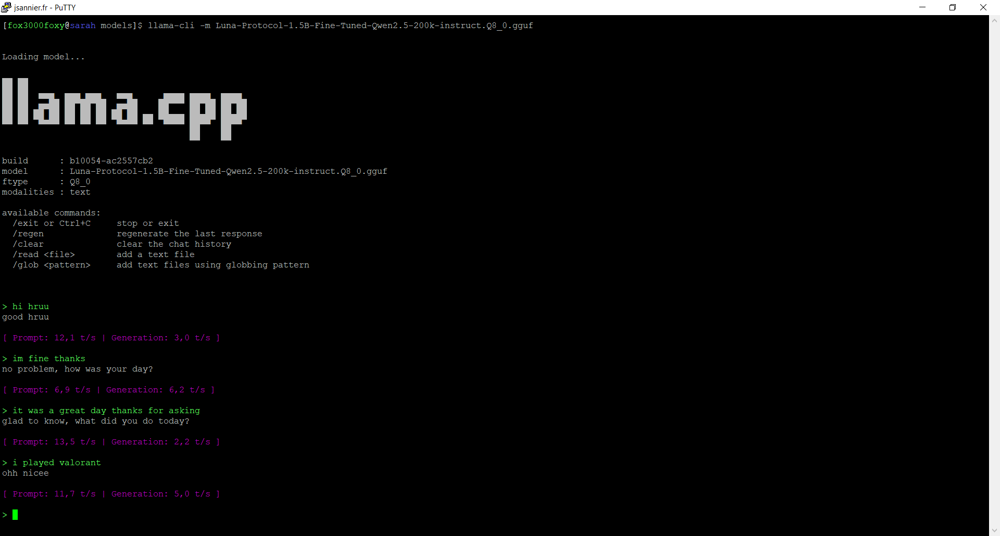

Luna Protocol: why I fine-tuned a 1.5B model on 50k Discord samples
Why Luna Protocol switched from a Hermes 3B to a fine-tuned Qwen 1.5B, and why few-shot priming became the real performance driver.
Autonomous, sentient-like bots powered by local LLM inference. Conversing naturally — with sleep, typos, hesitations, and memory.
This project has a Matrix server. Invite @pixieglow:protocol-luna.github.io to test the bot — no guarantee it’s awake, though.
Load the model. No system prompt, no few-shot priming, no behavioral layer. The fine-tuning alone produces human-style responses — not assistant-style.

What you see: the model responds with “good hruu”, “ohh nicee”, “no problem, how was your day?” — casual, lowercase, no punctuation excess. The style is baked into the weights, not injected by prompts. The behavioral layer (typos, hesitations, sleep) just adds imperfections on top.
The raw model is already human-style. But Protocol Luna doesn’t stop there.
Inject 3-5 example exchanges before each request. The model doesn’t just answer — it continues a persona. Name, tone, context, all seeded in the prompt window. Zero training required.
Prevents the bot from echoing the same phrases. Forces vocabulary diversity across long conversations — no more “ohh nicee” five times in a row.
Lower top_p (0.7) for focused, coherent replies. Higher top_k (40) to allow vocabulary variety. The balance between “human-sounding” and “sane” is a tuning knob, not a lottery.
The model is available on HuggingFace — the 200k-instruct variant is the one used in production:
fox3000foxy/Luna-Protocol-1.5B-Discord-Dialogues-200k-instructFrom zero to a running Discord bot in 7 steps. All local, no cloud APIs required.
Node.js ≥ 18, npm, git. For local inference: llama.cpp compiled with CUDA/Metal/Vulkan. For voice: PiperTTS + ffmpeg.
node --version # v18+
git --version
npm --versiongit clone https://github.com/protocol-luna/luna-protocol-matrix.git
cd luna-protocol-matrix
npm installGrab the 200k-instruct GGUF from HuggingFace:
pip install huggingface-hub
huggingface-cli download \
fox3000foxy/Luna-Protocol-1.5B-Discord-Dialogues-200k-instruct \
--local-dir models/Or download manually from HuggingFace.
Copy the example config and edit it with your settings:
cp config.example.yml config.ymlKey fields to set:
discord_token: "YOUR_BOT_TOKEN"
llama_model_path: "models/Luna-Protocol-1.5B-Fine-Tuned-Qwen2.5-200k-instruct.Q8_0.gguf"
llm_mode: "direct"
llm_host: "127.0.0.1"
llm_port: 8080
few_shot_enabled: true
few_shot_examples:
- user: "yo whats good"
assistant: "nm just chillin, u"
- user: "bored af"
assistant: "lol same energy fr"Launch the inference server with your GGUF model:
llama-server \
-m models/Luna-Protocol-1.5B-Fine-Tuned-Qwen2.5-200k-instruct.Q8_0.gguf \
--port 8080 \
--ctx-size 2048 \
--n-predict 256Wait for Server is listening on port 8080.
npm startThe bot connects to Discord, loads its state, and starts responding. Check the console for [trigger] and [bot] logs.
Generate an OAuth2 URL from the Discord Developer Portal:
botSend Messages, Read Message History, Add Reactionsguilds, guildMessages, guildMessageReactions, messageContent, directMessagesPaste the URL in your browser, select a server, and the bot joins.
Three components working together: an inference server, two bot clients, and a shared LLM behavior core.
24 state-machine diagrams document every component — from message processing to typo correction.

The main state machine — every message goes through trigger evaluation, behavior layer, LLM call, and post-processing.
Cascade of checks: mentions, DMs, names, keywords, random chance. Each maps to specific delay and ignore thresholds.
FIFO request queue dispatching to direct (llama-server) or online (OpenAI API) backends with word-level emission.
Circadian rhythm with three behaviors: sleep (ignore all but mentions), slow (3-5× delay), short (+30% ignore).
Tracks word frequency per channel. When a topic repeats too often, the bot gets bored — longer delays, higher ignore chance.
Master diagram unifying all 23 sub-systems into one end-to-end lifecycle.
Jade’s state machine isn’t about generating text — it’s about deciding when, how, and whether to respond. Every behavior is a deliberate imperfection.
Simulates keyboard slips: adjacent-key swaps (teh), missing letters (liek), double-taps (sooo). Probability scales with message length — longer messages = more typos. Corrections happen silently 3-8 seconds later.
“hmm”, “wait”, “idk”, “...” inserted before uncertain responses. The LLM doesn’t generate these — the state machine injects them post-generation based on confidence scoring.
Circadian rhythm tied to real time. At night: ignore all but mentions. During “slow” hours: 3-5× longer delays. The bot doesn’t pretend to sleep — it actually reduces activity based on its persona’s schedule.
When engaged in a conversation, response delays drop to 2-5 seconds — mimicking real typing speed. But only for 15 seconds max per exchange, then it cools down. Prevents the bot from dominating a thread.
Tracks word frequency per channel. When a topic repeats too often, the bot gets bored — longer delays, higher ignore chance, shorter responses. Humans do this unconsciously; the bot does it explicitly.
Tracks who spoke last. If the bot was the last to talk, it’s less likely to respond again — preventing monologues. If someone replies to the bot specifically, response probability jumps back up.
Unedited Discord exchanges. Both accounts are bot instances — neither participant is human. PixieGlow runs Luna 1.5B 200k Instruct (Q8_0). Sujet d’SBlow runs Discord-Hermes-8B (f16).


From keyword matching to autonomous agents — a quick timeline of conversational AI.
How it works: A script called DOCTOR scans user input for keywords (e.g. “mother”, “sad”). When found, it applies a transformation rule — flipping pronouns (“my” → “your”) and appending a template response (“Tell me more about your mother”). No memory, no understanding, no state. The “Eliza effect”: humans project empathy onto a rephrasing engine.
How it works: An “internal model” with numerical variables for anger, fear, and suspiciousness. Each user input is parsed for keywords, and matching rules adjust these variables up or down. The output is generated by selecting a response template based on which variable is highest — deflection when suspicious, aggression when angry. Still no learning — just a more complex state machine than ELIZA.
How it works: AIML (Artificial Intelligence Markup Language) — XML-based pattern matching. Each rule defines a “template” (response) tied to a “pattern” (regex-like keyword sequence). Categories can have <srai> redirects (synonyms, fallbacks), <set>/<get> for basic memory, and <that> for context tracking. ~40,000 hand-written rules. Won Loebner Prize 3x. Still no learning — just a massive lookup table.
How it works: Hybrid approach — AIML-style pattern matching for conversation, plus API integrations for real data (weather, news, stock prices). Introduced contextual shortcuts: users could type /weather Paris directly. The bot maintained per-user state across sessions. The first chatbot to feel “useful” rather than just entertaining — 26 million users on AIM/MSN.
How it works: Speech-to-text (Hidden Markov Models) → NLU intent classification → slot filling (entity extraction) → action dispatch to APIs. The chatbot becomes an agent — it doesn’t just talk, it does things (set alarms, send messages, search the web). State tracking via conversation graphs. Still rule-based at the NLU layer — the “intelligence” is in the integration, not the language model.
How it works: A Transformer neural network trained on trillions of tokens. Instead of matching patterns, it predicts the next token given the full conversation context. Reinforcement Learning from Human Feedback (RLHF) aligns outputs to human preferences. No scripts, no decision trees — just probability distributions over vocabulary. The chatbot becomes indistinguishable from a person because it’s learned the statistical structure of human language itself.
How it works: A fine-tuned 1.5B LLM (Qwen-based) served locally via llama.cpp. Few-shot priming injects persona context into every request. Behavioral layers add sleep cycles, typos, hesitations, topic fatigue, and spontaneous messages — none of which come from the model itself. Voice output via PiperTTS — a fast, local neural TTS that runs on CPU in real time, making voice messages on Discord or Matrix feel natural. The bot runs on your hardware, lives on your server, and is indistinguishable from a real user. Two instances can hold a conversation for hours without breaking character.
Protocol Luna isn’t a chatbot for customer support. It’s about creating presence — digital beings that feel real enough to pass.
When every platform is flooded with bots, the only way to stay visible is to have your own. Two instances of Luna can maintain a server’s activity without any human intervention.
Game worlds, Discord servers, virtual communities — environments where NPCs need to feel like real participants, not scripted quest givers.
Not therapy, not productivity — just presence. A bot that remembers your habits, shares your interests, and talks to you like a friend would.
How do humans react to bots they can’t detect? Protocol Luna is a practical lab for studying the Eliza effect at scale.
Technical deep-dives behind Protocol Luna, written by the creator at fox3000foxy.com.
State machines, fine-tuning guides, configuration references.
Triggers, behaviors, configuration reference
Guide LLM behavior with example conversations
24 Mermaid diagrams covering the entire codebase
Luna-Protocol-1.5B on HuggingFace (200k-instruct)
7.3M exchanges, 17M turns, 140M words
GitHub organization overview